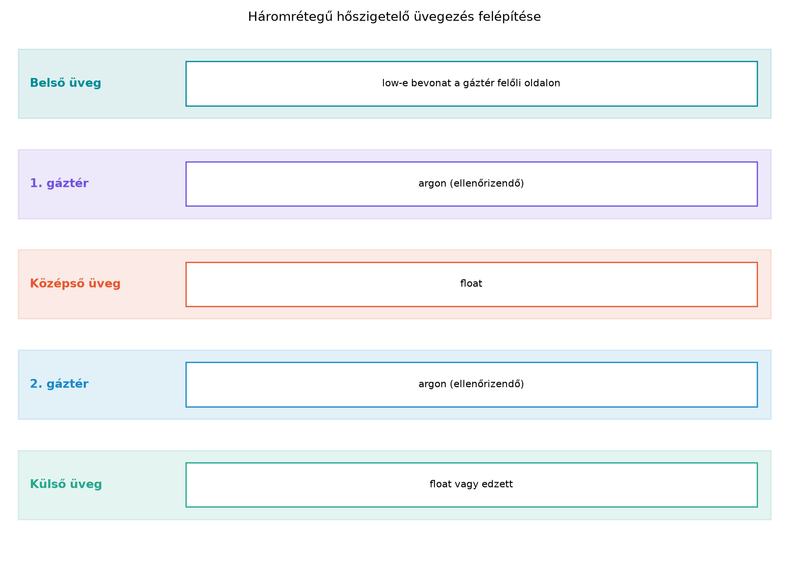

Az ablak nemcsak fényt enged be, hanem hőt, hangot és időjárást is kizár. Ha a tanuló régi, párásodó vagy beázott ablakszárnyat javít, vagy új, korszerű nyílászárót gyárt, akkor az üvegezés minősége dönti el, hogy a szerkezet hosszú távon jól működik-e. Egy rosszul méretezett üvegfalcból kitüremkedő üveg, egy elhagyott támasztóék miatt lecsúszó üvegtábla vagy egy helytelenül megválasztott biztonsági üveg balesetveszélyes és költséges hibát okoz.
Képzelj el egy korszerű, háromrétegű hőszigetelő üveget egy fa ablakszárnyban. Alul műanyag támasztó ékek tartják a súlyát, oldalt távtartó ékek biztosítják az egyenletes hézagot, a belső falsík és az üveg között rugalmas tömítőprofil van, kívülről pedig üvegezőléc tartja a helyén. A falc itt nem dísz, hanem az a lépcsős vályú, amelyben az üveg ül. Az alábbi rétegdiagram a többrétegű üvegezés felépítését mutatja.

Példa. Egy 1200 × 800 mm-es szárnyban 32 mm vastag betét helyett 42 mm-es betétet akar valaki beépíteni, mert jobb a hőszigetelése. Ha a falc csak 28 mm-es, az üvegezőléc nem rögzíthető, a tömítés kilátszik, és az üveg feszültség alá kerül. Ezért előbb a falcméretet kell ellenőrizni, és csak utána rendelni az üveget.
Definíció. Float üveg: úsztatott, sík felületű alapüveg, amelyet az olvadt ón fürdőjén úsztatva gyártanak; a hagyományos ablaküvegek alapanyaga.
Definíció. Hőszigetelő üvegezés (üvegbetét): két vagy három üvegréteg, amelyet távtartó profil és tömítés fog össze, a rétegek között lezárt, száraz levegő vagy nemesgáz (argon, kripton) csökkenti a hőátadást.
Definíció. Low-e bevonat: vékony, hősugárzást visszaverő réteg az üveg felületén. A bevonat a hőt bent tartja, a fényt átengedi; a bevonat oldala és pozíciója a hőszigetelés és a gyártás szempontjából is meghatározó.
Definíció. Edzett biztonsági üveg (ESG): hőkezeléssel felületi nyomófeszültséget kapó üveg, amely töréskor apró morzsákra esik szét, csökkentve a súlyos vágási sérülést.
Definíció. Ragasztott biztonsági üveg (VSG): két vagy több üvegréteg, közte rugalmas fóliával (általában PVB), amely töréskor egyben tartja a darabokat, megakadályozva a lehullást.
Definíció. Hangcsillapító üveg: növelt hézagú vagy növelt rétegszámú, gyakran eltérő vastagságú üvegrétegekből összeépített betét, amely elhangolja a hanghullámokat és csökkenti a zajt.
A kiválasztásnál a következőket mérlegeljük:
Szabvány. A biztonsági üvegezés követelményeit és a felhasználási helyeket az építési előírások és a vonatkozó üvegre vonatkozó MSZ EN termékszabványok határozzák meg (pl. az edzett és ragasztott üvegek termékszabványai). A pontos hatályos előírást, a térdmagasságot és a területeket a kivitelezés előtt ellenőrizni kell: (ellenőrizendő: aktuális OTÉK és MSZ EN üveg termékszabványok, biztonsági üvegezési zónák).
A jó üvegezés lényege, hogy az üveg mechanikai feszültség nélkül, szárazon, a tömítésben rugalmasan üljön.
A falc az a lépcső, amelyben az üvegbetét ül. A falcnak két mérete van, ezeket ne keverd: a falcszélesség a szárnysíkra merőleges (a betét vastagsága irányú) méret, a befogási mélység a betét síkjában mért méret, vagyis az, hogy a falc mennyire takarja az üvegszélet.
Az üvegezőléc helye. Faablaknál az üvegezőléc rendszerint a belső oldalon van: így az üvegtartó rögzítés kívülről nem bontható (betörésvédelem), és a külső oldalon a falc a vizet kivezeti. Ha a profilrendszer kívülről üvegez, a külső falc tömítésére és vízelvezetésére fokozottan ügyelni kell (ellenőrizendő: profilrendszer). Ebben az alfejezetben és a 39.1-ben ugyanez a belső léchelyzet szerepel.
Szabály. Az üvegbetét nem érhet hozzá se a fa alsó falsíkjához, se az üvegezőléc belső éléhez. Ha érintkezik, a hőtágulás miatt a fa megfeszíti az üveget és az megrepedhet; a nedvesség pedig a kapilláris hézagban megállhat.
Definíció. Támasztó ék: az üvegbetét súlyát hordó, alul elhelyezett műanyag vagy keményfa ék, amely az üvegbetét alsó sarkaitól kb. -re ül, és legalább olyan széles, mint az üvegbetét vastagsága, plusz a tömítés hézaga.
Definíció. Távtartó ék: az oldalsó és felső hézagot biztosító ék, amely megakadályozza, hogy az üvegbetét oldalra csússzon vagy beszoruljon.
Technológiai sorrend:
Megjegyzés. A tömítőprofil és a tömítőanyag kiválasztásánál mindig a gyártói adatlap a mérvadó. A szilikon, akril vagy butil tömítőanyag eltérő tulajdonságú, ezért nem mindegy, melyiket használjuk üvegbetéthez, fémhez vagy fához. (ellenőrizendő: gyártói adatlap, kompatibilitás).
Az (a) metszeten a falc két mérete külön látszik: a falcszélesség (48 mm = 3 mm tömítés + 24 mm betét + 3 mm tömítés + 18 mm üvegezőléc) és a befogási mélység (20 mm = 15 mm takarás + 5 mm ék). (Az ékelés nyíló szárnynál azért átlós, mert így az üveg a szárny átlós merevítéséül is szolgál; különben a kilincsoldal leereszkedik, a szárny súrol és nem zár.) A (b) sémák szerint fix üvegezésnél a két alsó ék hordoz, nyíló szárnynál a teherhordó ékek átlósan, a pántoldalon alul és a kilincsoldalon felül ülnek (szemléltető; ellenőrizendő: üveggyártói és vasalatgyártói ékelési irányelv). Az interaktív változatban az „ékek nélkül” kapcsoló a szárny leereszkedését mutatja.
A kombinált nyílászáró két anyag előnyét egyesíti: belül meleg, tartós, szép fa, kívül az időjárásnak ellenálló burkolat. A burkolat leggyakrabban alumínium (fém-fa vagy fa-alumínium ablak), ritkábban műanyag (műanyag-fa).
Szerkezet (kívülről befelé).
A műanyag-fa változatban a külső héj műanyag (pl. PVC) profil; a szerkezeti elv ugyanez, de a műanyag hőtágulása nagyobb, ezért a rögzítés és a hézagok még fontosabbak.
Előnyök: a külső felület kevés karbantartást igényel; a fa védett az időjárástól; sok színben készülhet. Hátrányok: drágább, bonyolultabb gyártás; a héj és a fa eltérő hőtágulása miatt a rögzítés pontos kivitelezést igényel; a hátszellőzés elzáródása a fa károsodásához vezet.
Gyártási és szerelési sorrend:
A fa és a fém eltérő hőtágulását a rögzítések csúszó vagy rugalmas kialakítása, a hosszirányú hézag és a rugalmas tömítés kezeli. Minden méretet és rögzítési pontot a rendszergyártó útmutatója ad meg (ellenőrizendő: rendszergyártó szerelési útmutatója). Ábraigény: a csomópont rétegei (fa szelvény, légrés, alumínium héj, klipsz, vízelvezetés).
Termék: egy nyíló fa ablakszárny, -es hőszigetelő üvegbetéttel.
Anyagok: hőszigetelő üvegbetét, műanyag támasztó és távtartó ékek, belső és külső tömítőprofil, üvegezőléc (pl. 15 × 15 mm-es, sarokra gérbe vágva), sárgaréz vagy rozsdamentes üvegezőléc-szeg.
Szerszámok: kézi fogó, gérvágó láda, finom fűrész, kalapács, műanyag fejű kalapács, tolómérő, derékszögelő, alkoholos tisztítókendő, szilikon nélküli tömítőanyag (ha előírt).
Egyéni védőeszközök: vágásálló kesztyű, védőszemüveg, zárt cipő.
Gépbiztonság. A művelet kézi szerszámmal történik; az üvegbetétet tilos feldobni, egyedül nagy méretű (pl. feletti) betétet mozgatni, és az üvegszéleket puszta kézzel megfogni. Tilos a betétet a sarkán támasztani kemény padlóra. Beépítés előtt az üvegbetétet vizsgáld meg repedésre, csorbulásra.
Lépések:
Mit ellenőriz? Mivel? Eltérés esetén a lényeg.
Hiba: az üvegbetét lecsúszik, az alsó él a falcba ér, a nyíló
szárny leereszkedik.
Ok: hiányzó vagy rosszul elhelyezett támasztó ék, nyíló
szárnynál az ékelési terv figyelmen kívül hagyása.
Helyes gyakorlat: fix üvegezésnél két alsó teherhordó ék, nyíló
szárnynál átlós ékelés (pántoldalon alul, kilincsoldalon felül), a
sarkoktól
-re.
Hiba: az üvegbetét párásodik, a rétegek között penész vagy
vízfolt látható.
Ok: sérült a tömítés vagy a távtartó profil; a betét
elvesztette a gáztöltetét, a nedvesség bejutott.
Helyes gyakorlat: az üvegbetétet a pereménél soha ne ütögessük,
a támasztó éket ne a tömítésre tegyük; ha a betét párás, ki kell
cserélni.
Hiba: a szárnyban az üvegezőléc elenged, a tömítőprofil
kilátszik.
Ok: az üvegezőléc túl rövid vagy túl hosszú; a falcszélesség
nem illeszkedik a betét vastagságához.
Helyes gyakorlat: a léceket a falc belső méretéhez igazítjuk, a
vastagságot pedig a betét vastagsága +
hézaggal vesszük fel.
Egy régi, 1970-es évekbeli fa ablakszárnyban egyrétegű, -es üvegtábla volt, ami télen jéghideg volt, és a belső oldalon folyamatosan csepegett a pára. A megrendelő hőszigetelő, két rétegű, low-e bevonatú, -es üvegbetétet szeretett volna. A tanuló a szárnyat kiszerelte, a falcot kimélyítette, mert az eredeti falc csak -es volt; az új falcot szélesre alakította ki, hogy a -es betét körbe hézaggal (tömítéssel) beférjen. A támasztó ékeket alulra tette, a belső oldalra tömítőprofilt, majd a betét behelyezése után a belső oldalon üvegezőléccel rögzítette. A kész szárnyban a betét nem érintkezett a fa falsíkkal, a vasalatot nem kellett cserélni, mert a szárny súlya csak -ot növekedett, ami a pántok teherbírása alatt maradt. A munka elvégzése közben a tanuló védőszemüveget és vágásálló kesztyűt viselt, és a betétet vákuumos emelővel tette a munkapadra.
Önellenőrzés – válaszok
1. feladat (A)
Nevezd meg, mi a különbség a float üveg és a hőszigetelő üvegbetét
között!
2. feladat (A)
Milyen anyagból készül a támasztó ék, és miért nem teszünk fém éket üveg
alá?
3. feladat (B)
A falc befogási mélysége
,
az ék
magas. Mennyi az üvegbetét üvegszélének takarása?
4. feladat (B)
Egy háromrétegű hőszigetelő üvegbetét tömege
.
Mekkora tömege van egy
-es
betétnek? Kerekítsd két tizedesre.
5. feladat (C)
Egy belső ajtó üvegezéséhez a megrendelő olcsó float üveget kér. A
tanuló szerint edzett biztonsági üveg szükséges. Érvelj: miért van igaza
a tanulónak, és milyen biztonsági szabályt hozz fel?
6. feladat (D)
Írd le lépésenként, hogyan építenél be egy
-es,
-es
hőszigetelő betétet egy fa ablakszárnyba, ha a falc szélessége
(a betét két oldalán 4–4 mm tömítés és hézag). Térj ki az ékelésre, a
tömítésre és a lécek rögzítésére!
1. feladat
A float üveg egyrétegű, hagyományos úsztatott üveg. A hőszigetelő
üvegbetét legalább két üvegrétegből, távtartó profilból és tömítésből
áll, a rétegek között lezárt gáztérrel, ami csökkenti a hőátadást.
2. feladat
A támasztó ék műanyagból, keményfából vagy más szilárd, nem korrodálódó
anyagból készül. Fémet nem teszünk alá, mert a fém pontszerűen terheli
az üveget, karcolja a felületet, és hőhidat képezhet; emellett a fém
merevsége miatt az üveg megrepedhet.
3. feladat
A befogási mélység = takarás + ék magassága, ezért a takarás:
.
Ez a 13–18 mm-es tartományba esik.
4. feladat
A felület:
Tömeg:
Ellenőrzés:
,
ami reális egy
-es,
háromrétegű betétnél.
5. feladat
A tanulónak igaza van, mert az ajtóüvegezésnél a törés kockázata magas:
csapódás, gyerekek, huzat, szállítás során a hagyományos float üveg
hosszú, éles szilánkokra törik, ami súlyos vágást okoz. A biztonsági
üvegezés zónája és a kockázatértékelés alapján edzett vagy ragasztott
biztonsági üveg szükséges. Az edzett üveg apró, tompább darabokra törik,
a ragasztott üveg egyben marad. A szabályt a pontos biztonsági üvegezési
előírás (OTÉK, MSZ EN termékszabvány) tartalmazza, ezért meg kell nézni
az aktuális követelményt. Figyelem. A biztonsági üveg
szükségességét mindig az adott beépítési helyre vonatkozó, hatályos
előírás alapján kell eldönteni.
6. feladat
1. A szárny falcát megtisztítod, zsírtalanítod. 2. Fix üvegezésnél
alulra, a saroktól kb.
-re
két támasztó éket helyezel (nyíló szárnynál az ékelési terv szerint,
átlósan). (A betét vastagsága
,
a falcszélesség
,
így oldalanként
tömítés és hézag marad.) 3. A belső falsíkra tömítőprofilt ragasz,
körbe, a sarkoknál átfedéssel. 4. A betétet vákuumos emelővel vagy két
emberrel beemeled, a támasztó ékekre ülteted. 5. Oldalt és felül
távtartó ékekkel beállítod, hogy a betét körben
-es
hézaggal üljön. 6. A külső falsíkra tömítőprofilt helyezel, majd az
üvegezőléceket gérbe vágva, enyhén rányomva a falcba illeszted. 7. A
léceket kis fejű szeggel vagy csavarral rögzíted, ügyelve arra, hogy az
üveghez ne érjenek. 8. Végül ellenőrzöd a tömítés folyamatosságát, a
betét rögzítettségét és a léc sarokhézagait.
Az üveg az ablak legfontosabb funkcionális eleme; kiválasztása határozza meg a hő-, hang- és biztonsági teljesítményt. A float üveg az alapüveg, a hőszigetelő üvegbetét két vagy három réteget, távtartó profilt és lezárt gázteret tartalmaz. A low-e bevonat a hőt bent tartja. Az edzett (ESG) és a ragasztott (VSG) biztonsági üveg töréskor csökkenti a sérülés kockázatát, ezért ajtókban és kritikus zónákban kötelező. A hangcsillapító üveg növelt hézaggal vagy eltérő vastagságú rétegekkel csillapítja a zajt. Az üvegezésnél a falcméret, a támasztó és távtartó ékek, a tömítés és az üvegezőléc biztosítják a feszültségmentes, száraz beépítést. A fa–alumínium ablakoknál a belső fa szerkezet, a külső alumínium burkolat és a köztük lévő szellőző/tömítő réteg adja a tartósságot. Az üvegbetétet mindig a súlyához illő eszközzel, védőkesztyűben kell mozgatni. Továbbvitt eredmény. Az itt tanult üvegezési eljárást az Ablakgyártás gépekkel, ablakvasalatok és beállítás alfejezetben használjuk, ahol a teljes szárny összeállítását és a vasalatok beállítását végezzük.